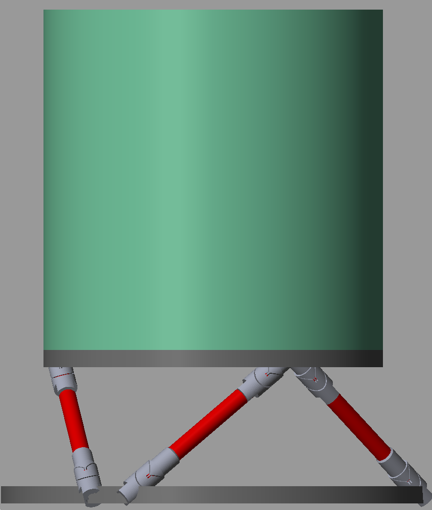
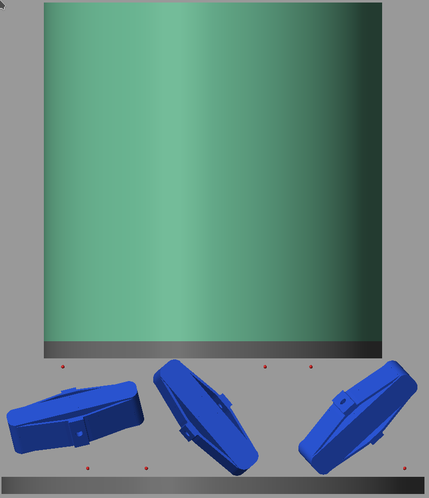
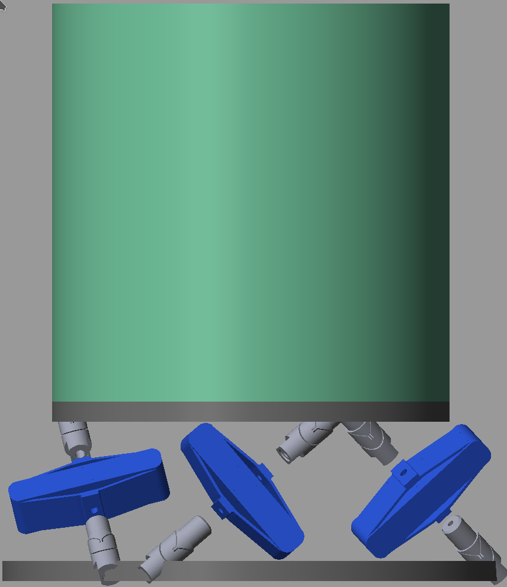

Stewart Platform with Flexible Elements
Table of Contents
1 Simscape Model
1.1 Flexible APA
apa = load('./mat/APA300ML.mat', 'int_xyz', 'int_i', 'n_xyz', 'n_i', 'nodes', 'M', 'K');
| Total number of Nodes | 7 |
| Number of interface Nodes | 7 |
| Number of Modes | 120 |
| Size of M and K matrices | 162 |
| Node i | Node Number | x [m] | y [m] | z [m] |
|---|---|---|---|---|
| 1.0 | 697783.0 | 0.0 | 0.0 | -0.015 |
| 2.0 | 697784.0 | 0.0 | 0.0 | 0.015 |
| 3.0 | 697785.0 | -0.0325 | 0.0 | 0.0 |
| 4.0 | 697786.0 | -0.0125 | 0.0 | 0.0 |
| 5.0 | 697787.0 | -0.0075 | 0.0 | 0.0 |
| 6.0 | 697788.0 | 0.0125 | 0.0 | 0.0 |
| 7.0 | 697789.0 | 0.0325 | 0.0 | 0.0 |
1.2 Flexible Joint
flex_joint = load('./mat/flexor_025.mat', 'int_xyz', 'int_i', 'n_xyz', 'n_i', 'nodes', 'M', 'K');
| Total number of Nodes | 2 |
| Number of interface Nodes | 2 |
| Number of Modes | 6 |
| Size of M and K matrices | 18 |
| Node i | Node Number | x [m] | y [m] | z [m] |
|---|---|---|---|---|
| 1.0 | 528875.0 | 0.0 | 0.0 | 0.0 |
| 2.0 | 528876.0 | 0.0 | 0.0 | -0.0 |
| Caracteristic | Value |
|---|---|
| Axial Stiffness [N/um] | 94 |
| Bending Stiffness [Nm/rad] | 5 |
| Bending Stiffness [Nm/rad] | 5 |
| Torsion Stiffness [Nm/rad] | 260 |
1.3 Identification
And we identify the dynamics from force actuators to force sensors.
%% Options for Linearized options = linearizeOptions; options.SampleTime = 0; %% Name of the Simulink File mdl = 'stewart_platform_model'; %% Input/Output definition clear io; io_i = 1; io(io_i) = linio([mdl, '/Controller'], 1, 'openinput'); io_i = io_i + 1; % Actuator Force Inputs [N] io(io_i) = linio([mdl, '/Stewart Platform'], 1, 'openoutput', [], 'dLm'); io_i = io_i + 1; % Relative Displacement Outputs [m] io(io_i) = linio([mdl, '/Stewart Platform'], 1, 'openoutput', [], 'Taum'); io_i = io_i + 1; % Force Sensors [N]
ground = initializeGround('type', 'none');
payload = initializePayload('type', 'rigid', 'm', 50);
controller = initializeController('type', 'open-loop');
disturbances = initializeDisturbances();
1.4 No Flexible Elements
stewart = initializeStewartPlatform();
stewart = initializeFramesPositions(stewart);
stewart = generateGeneralConfiguration(stewart);
stewart = computeJointsPose(stewart);
stewart = initializeAmplifiedStrutDynamics(stewart, 'Ke', 1.5e6*ones(6,1), 'Ka', 40.5e6*ones(6,1), 'K1', 0.4e6*ones(6,1));
stewart = initializeJointDynamics(stewart, 'type_M', 'spherical_3dof', ...
'Kr_M', flex_joint.K(1,1)*ones(6,1), ...
'Ka_M', flex_joint.K(3,3)*ones(6,1), ...
'Kf_M', flex_joint.K(4,4)*ones(6,1), ...
'Kt_M', flex_joint.K(6,6)*ones(6,1), ...
'type_F', 'universal_3dof', ...
'Kr_F', flex_joint.K(1,1)*ones(6,1), ...
'Ka_F', flex_joint.K(3,3)*ones(6,1), ...
'Kf_F', flex_joint.K(4,4)*ones(6,1), ...
'Kt_F', flex_joint.K(6,6)*ones(6,1));
stewart = initializeCylindricalPlatforms(stewart);
stewart = initializeCylindricalStruts(stewart);
stewart = computeJacobian(stewart);
stewart = initializeStewartPose(stewart);
stewart = initializeInertialSensor(stewart);
references = initializeReferences(stewart);
%% Run the linearization
G = linearize(mdl, io, options);
G.InputName = {'F1', 'F2', 'F3', 'F4', 'F5', 'F6'};
G.OutputName = {'Dm1', 'Dm2', 'Dm3', 'Dm4', 'Dm5', 'Dm6', 'Fm1', 'Fm2', 'Fm3', 'Fm4', 'Fm5', 'Fm6'};
1.5 Flexible joints

Figure 1: Figure caption
stewart = initializeStewartPlatform(); stewart = initializeFramesPositions(stewart); stewart = generateGeneralConfiguration(stewart); stewart = computeJointsPose(stewart); stewart = initializeAmplifiedStrutDynamics(stewart, 'Ke', 1.5e6*ones(6,1), 'Ka', 40.5e6*ones(6,1), 'K1', 0.4e6*ones(6,1)); stewart = initializeJointDynamics(stewart, 'type_F', 'flexible', 'K_F', flex_joint.K, 'M_F', flex_joint.M, 'n_xyz_F', flex_joint.n_xyz, 'xi_F', 0.1, 'step_file_F', 'mat/flexor_ID16.STEP', 'type_M', 'flexible', 'K_M', flex_joint.K, 'M_M', flex_joint.M, 'n_xyz_M', flex_joint.n_xyz, 'xi_M', 0.1, 'step_file_M', 'mat/flexor_ID16.STEP'); stewart = initializeCylindricalPlatforms(stewart); stewart = initializeCylindricalStruts(stewart); stewart = computeJacobian(stewart); stewart = initializeStewartPose(stewart); stewart = initializeInertialSensor(stewart);
%% Run the linearization
Gj = linearize(mdl, io, options);
Gj.InputName = {'F1', 'F2', 'F3', 'F4', 'F5', 'F6'};
Gj.OutputName = {'Dm1', 'Dm2', 'Dm3', 'Dm4', 'Dm5', 'Dm6', 'Fm1', 'Fm2', 'Fm3', 'Fm4', 'Fm5', 'Fm6'};
1.6 Flexible APA

Figure 2: Figure caption
stewart = initializeStewartPlatform();
stewart = initializeFramesPositions(stewart);
stewart = generateGeneralConfiguration(stewart);
stewart = computeJointsPose(stewart);
stewart = initializeFlexibleStrutDynamics(stewart, 'H', 0.03, 'K', apa.K, 'M', apa.M, 'n_xyz', apa.n_xyz, 'xi', 0.1, 'Gf', -2.65e7, 'step_file', 'mat/APA300ML.STEP');
stewart = initializeJointDynamics(stewart, 'type_M', 'spherical_3dof', ...
'Kr_M', flex_joint.K(1,1)*ones(6,1), ...
'Ka_M', flex_joint.K(3,3)*ones(6,1), ...
'Kf_M', flex_joint.K(4,4)*ones(6,1), ...
'Kt_M', flex_joint.K(6,6)*ones(6,1), ...
'type_F', 'universal_3dof', ...
'Kr_F', flex_joint.K(1,1)*ones(6,1), ...
'Ka_F', flex_joint.K(3,3)*ones(6,1), ...
'Kf_F', flex_joint.K(4,4)*ones(6,1), ...
'Kt_F', flex_joint.K(6,6)*ones(6,1));
stewart = initializeCylindricalPlatforms(stewart);
stewart = initializeCylindricalStruts(stewart, 'type_F', 'none', 'type_M', 'none');
stewart = computeJacobian(stewart);
stewart = initializeStewartPose(stewart);
stewart = initializeInertialSensor(stewart);
%% Run the linearization
Ga = -linearize(mdl, io, options);
Ga.InputName = {'F1', 'F2', 'F3', 'F4', 'F5', 'F6'};
Ga.OutputName = {'Dm1', 'Dm2', 'Dm3', 'Dm4', 'Dm5', 'Dm6', 'Fm1', 'Fm2', 'Fm3', 'Fm4', 'Fm5', 'Fm6'};
1.7 Flexible Joints and APA

Figure 3: Figure caption
stewart = initializeStewartPlatform(); stewart = initializeFramesPositions(stewart); stewart = generateGeneralConfiguration(stewart); stewart = computeJointsPose(stewart); stewart = initializeFlexibleStrutDynamics(stewart, 'H', 0.03, 'K', apa.K, 'M', apa.M, 'n_xyz', apa.n_xyz, 'xi', 0.1, 'Gf', -2.65e7, 'step_file', 'mat/APA300ML.STEP'); stewart = initializeJointDynamics(stewart, 'type_F', 'flexible', 'K_F', flex_joint.K, 'M_F', flex_joint.M, 'n_xyz_F', flex_joint.n_xyz, 'xi_F', 0.1, 'step_file_F', 'mat/flexor_ID16.STEP', 'type_M', 'flexible', 'K_M', flex_joint.K, 'M_M', flex_joint.M, 'n_xyz_M', flex_joint.n_xyz, 'xi_M', 0.1, 'step_file_M', 'mat/flexor_ID16.STEP'); stewart = initializeCylindricalPlatforms(stewart); stewart = initializeCylindricalStruts(stewart, 'type_F', 'none', 'type_M', 'none'); stewart = computeJacobian(stewart); stewart = initializeStewartPose(stewart); stewart = initializeInertialSensor(stewart);
Gf = -linearize(mdl, io, options);
Gf.InputName = {'F1', 'F2', 'F3', 'F4', 'F5', 'F6'};
Gf.OutputName = {'Dm1', 'Dm2', 'Dm3', 'Dm4', 'Dm5', 'Dm6', 'Fm1', 'Fm2', 'Fm3', 'Fm4', 'Fm5', 'Fm6'};
1.8 Save
save('./mat/flexible_stewart_platform.mat', 'G', 'Gj', 'Ga', 'Gf');
1.9 Direct Velocity Feedback

Figure 4: Change of the DVF plant dynamics with the added flexible elements
1.10 Integral Force Feedback

Figure 5: Change of the IFF plant dynamics with the added flexible elements
1.11 Procedure to include flexible elements into Simscape
In order to model a flexible element with only few mass-spring-damper elements:
- FEM of the flexible element
- Super-Element extraction
- Parameters to extract
- For the flexible joint: axial, shear, bending and torsion stiffnesses
- For the APA: k1, ka, ke, c1
- This can be done directly from the Stiffness matrix or using identification from a simple Simscape model
1.12 Conclusion
The results seems to indicate that the model is well represented with only few degrees of freedom. This permit to have a relatively sane number of states for the model.
2 Control with flexible elements
2.1 Flexible APA and Flexible Joint
apa = load('./mat/APA300ML.mat', 'int_xyz', 'int_i', 'n_xyz', 'n_i', 'nodes', 'M', 'K');
flex_joint = load('./mat/flexor_ID16.mat', 'int_xyz', 'int_i', 'n_xyz', 'n_i', 'nodes', 'M', 'K');
stewart = initializeStewartPlatform(); stewart = initializeFramesPositions(stewart); stewart = generateGeneralConfiguration(stewart); stewart = computeJointsPose(stewart); stewart = initializeFlexibleStrutDynamics(stewart, 'H', 0.03, 'K', apa.K, 'M', apa.M, 'n_xyz', apa.n_xyz, 'xi', 0.1, 'step_file', 'mat/APA300ML.STEP'); stewart = initializeJointDynamics(stewart, 'type_F', 'flexible', 'K_F', flex_joint.K, 'M_F', flex_joint.M, 'n_xyz_F', flex_joint.n_xyz, 'xi_F', 0.1, 'step_file_F', 'mat/flexor_ID16.STEP', 'type_M', 'flexible', 'K_M', flex_joint.K, 'M_M', flex_joint.M, 'n_xyz_M', flex_joint.n_xyz, 'xi_M', 0.1, 'step_file_M', 'mat/flexor_ID16.STEP'); stewart = initializeCylindricalPlatforms(stewart); stewart = initializeCylindricalStruts(stewart, 'type_F', 'none', 'type_M', 'none'); stewart = computeJacobian(stewart); stewart = initializeStewartPose(stewart); stewart = initializeInertialSensor(stewart);
ground = initializeGround('type', 'none');
payload = initializePayload('type', 'rigid', 'm', 50);
controller = initializeController('type', 'open-loop');
disturbances = initializeDisturbances(); references = initializeReferences(stewart);
2.2 Identification
And we identify the dynamics from force actuators to force sensors.
%% Options for Linearized options = linearizeOptions; options.SampleTime = 0; %% Name of the Simulink File mdl = 'stewart_platform_model'; %% Input/Output definition clear io; io_i = 1; io(io_i) = linio([mdl, '/Controller'], 1, 'openinput'); io_i = io_i + 1; % Actuator Force Inputs [N] io(io_i) = linio([mdl, '/Stewart Platform'], 1, 'openoutput', [], 'dLm'); io_i = io_i + 1; % Relative Displacement Outputs [m]
G = -linearize(mdl, io, options);
G.InputName = {'F1', 'F2', 'F3', 'F4', 'F5', 'F6'};
G.OutputName = {'Dm1', 'Dm2', 'Dm3', 'Dm4', 'Dm5', 'Dm6'};
2.3 Decentralized Direct Velocity Feedback
Controller Design
Kl = -1e5*s/(1 + s/2/pi/2e2)/(1 + s/2/pi/5e2) * eye(6);
isstable(feedback(G(1:6,1:6)*Kl, eye(6), -1))
1
2.4 HAC
Kx = tf(zeros(6));
controller = initializeController('type', 'ref-track-hac-dvf');
%% Name of the Simulink File
mdl = 'stewart_platform_model';
%% Input/Output definition
clear io; io_i = 1;
io(io_i) = linio([mdl, '/Controller'], 1, 'input'); io_i = io_i + 1; % Actuator Force Inputs [N]
io(io_i) = linio([mdl, '/Relative Motion Sensor'], 1, 'openoutput'); io_i = io_i + 1; % Relative Displacement Outputs [m]
%% Run the linearization
G = linearize(mdl, io);
G.InputName = {'F1', 'F2', 'F3', 'F4', 'F5', 'F6'};
G.OutputName = {'Dx', 'Dy', 'Dz', 'Rx', 'Ry', 'Rz'};
Gl = -stewart.kinematics.J*G;
Gl.OutputName = {'D1', 'D2', 'D3', 'D4', 'D5', 'D6'};
wc = 2*pi*300; Kl = diag(1./diag(abs(freqresp(Gl, wc)))) * wc/s * 1/(1 + s/3/wc);
3 Flexible Joint Specifications
3.1 Stewart Platform Initialization
stewart = initializeStewartPlatform(); stewart = initializeFramesPositions(stewart); stewart = generateGeneralConfiguration(stewart); stewart = computeJointsPose(stewart); stewart = initializeAmplifiedStrutDynamics(stewart, 'Ke', 1.5e6*ones(6,1), 'Ka', 43e6*ones(6,1), 'K1', 0.4e6*ones(6,1), 'C1', 10*ones(6,1)); stewart = initializeCylindricalPlatforms(stewart); stewart = initializeCylindricalStruts(stewart); stewart = computeJacobian(stewart); stewart = initializeStewartPose(stewart); stewart = initializeInertialSensor(stewart); references = initializeReferences(stewart);
ground = initializeGround('type', 'none');
payload = initializePayload('type', 'rigid', 'm', 50);
controller = initializeController('type', 'open-loop');
disturbances = initializeDisturbances();
open('stewart_platform_model.slx')
3.2 Effect of the Bending Stiffness
Kfs = [1, 10, 100, 1000]; % [Nm/rad]
3.3 Effect of the Torsion Stiffness
Kts = [10, 100, 500, 1000]; % [Nm/rad]
3.4 Effect of the Axial Stiffness
Kas = [1e6, 1e7, 1e8, 5e8, 1e9]; % [N/m]
3.5 Effect of the Radial (Shear) Stiffness
Krs = [1e4, 1e5, 1e6, 1e7]; % [N/m]
3.6 Comparison of perfect joint and worst specified joint
3.7 Conclusion
Qualitatively:
| Specification | |
|---|---|
| Axial Stiffness | Much larger than the Actuator axial stiffness |
| Shear Stiffness | |
| Bending Stiffness | Much smaller than the Actuator bending stiffness |
| Torsion Stiffness |
Quantitatively:
| Specification | |
|---|---|
| Axial Stiffness | > 200 [N/um] |
| Shear Stiffness | > 1 [N/um] |
| Bending Stiffness | < 100 [Nm/rad] |
| Torsion Stiffness | < 500 [Nm/rad] |
4 Flexible Joint Specifications with the APA300ML
4.1 Stewart Platform Initialization
apa = load('./mat/APA300ML.mat', 'int_xyz', 'int_i', 'n_xyz', 'n_i', 'nodes', 'M', 'K');
stewart = initializeStewartPlatform(); stewart = initializeFramesPositions(stewart); stewart = generateGeneralConfiguration(stewart); stewart = computeJointsPose(stewart); stewart = initializeFlexibleStrutDynamics(stewart, 'H', 0.03, 'K', apa.K, 'M', apa.M, 'n_xyz', apa.n_xyz, 'xi', 0.1, 'step_file', 'mat/APA300ML.STEP'); stewart = initializeCylindricalPlatforms(stewart); stewart = initializeCylindricalStruts(stewart, 'type_F', 'none', 'type_M', 'none'); stewart = computeJacobian(stewart); stewart = initializeStewartPose(stewart); stewart = initializeInertialSensor(stewart); references = initializeReferences(stewart);
ground = initializeGround('type', 'none');
payload = initializePayload('type', 'rigid', 'm', 50);
controller = initializeController('type', 'open-loop');
disturbances = initializeDisturbances();
open('stewart_platform_model.slx')
4.2 Comparison of perfect joint and worst specified joint
5 Relative Motion Sensors
5.1 Stewart Platform Initialization
stewart = initializeStewartPlatform(); stewart = initializeFramesPositions(stewart); stewart = generateGeneralConfiguration(stewart); stewart = computeJointsPose(stewart);
apa = load('./mat/APA300ML.mat', 'int_xyz', 'int_i', 'n_xyz', 'n_i', 'nodes', 'M', 'K');
stewart = initializeAmplifiedStrutDynamics(stewart, 'Ke', 1.5e6*ones(6,1), 'Ka', 40.5e6*ones(6,1), 'K1', 0.4e6*ones(6,1));
% stewart = initializeFlexibleStrutDynamics(stewart, 'H', 0.03, 'K', apa.K, 'M', apa.M, 'n_xyz', apa.n_xyz, 'xi', 0.1, 'step_file', 'mat/APA300ML.STEP');
flex_joint = load('./mat/flexor_025.mat', 'int_xyz', 'int_i', 'n_xyz', 'n_i', 'nodes', 'M', 'K');
stewart = initializeJointDynamics(stewart, 'type_M', 'spherical_3dof', ...
'Kr_M', flex_joint.K(1,1)*ones(6,1), ...
'Ka_M', flex_joint.K(3,3)*ones(6,1), ...
'Kf_M', flex_joint.K(4,4)*ones(6,1), ...
'Kt_M', flex_joint.K(6,6)*ones(6,1), ...
'type_F', 'universal_3dof', ...
'Kr_F', flex_joint.K(1,1)*ones(6,1), ...
'Ka_F', flex_joint.K(3,3)*ones(6,1), ...
'Kf_F', flex_joint.K(4,4)*ones(6,1), ...
'Kt_F', flex_joint.K(6,6)*ones(6,1));
stewart = initializeCylindricalPlatforms(stewart);
stewart = initializeCylindricalStruts(stewart);
stewart = computeJacobian(stewart); stewart = initializeStewartPose(stewart); stewart = initializeInertialSensor(stewart); references = initializeReferences(stewart);
ground = initializeGround('type', 'none');
payload = initializePayload('type', 'rigid', 'm', 50);
controller = initializeController('type', 'open-loop');
disturbances = initializeDisturbances();